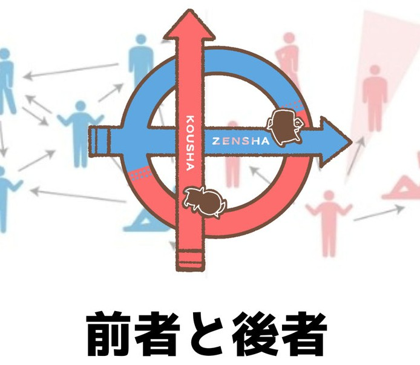
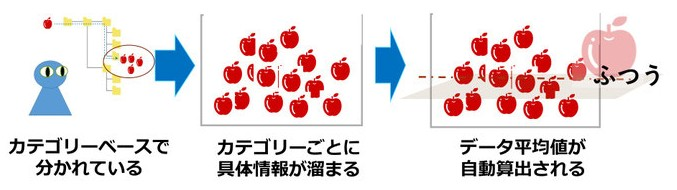
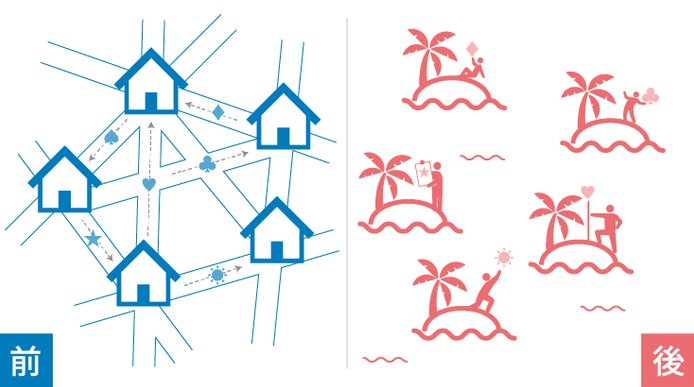
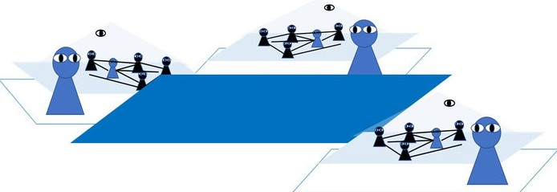
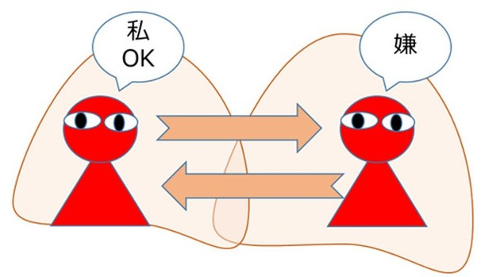
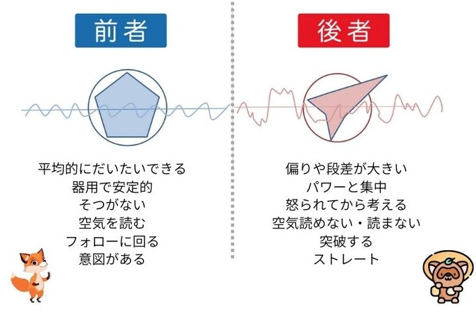
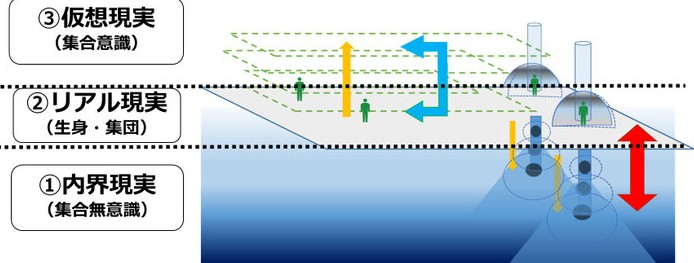

前者・後者について

「体の男・女」「利き手の右・左」のように、思考や意識の仕組みにも２つのタイプがある——その基本を、このページ内でまとめて読めるようにしました。気になるところへジャンプして読んでください。もっと詳しく知りたくなったら、各セクションから詳細ページに進めます。
前者後者論とは
「体の男・女」「利き手の右・左」「性格の外向・内向」と同じように、思考や意識の仕組みにも２つのタイプがあることに着目したタイプ論です。
たった２つのタイプ（最終的には9タイプ）で、すべての人が当事者。わかりやすく、即座に応用可能で、原理や仕組みを持っています。自分や身近な家族・友人への「なんでそうなるの？」の理由が見えてきます。
モニター視点と光源視点

前者は常に「全体」があるのが特徴。RPGやボードゲームを眺めるように、現実と並行して全体をシミュレーションした「盤」を持っています（モニター視点）。
後者は常に「自分」が起点で中心。顔面にサーチライトが１つあるように、自分が見たものが世界です（光源視点）。この認知の違いが、「気にしすぎ」「天然」といった、日々の「あるある」のズレの出発点になっています。
地上族と水中（地下）族

前者は「寝るまでずっとON」。地上に意識がさらされ続け、時間も空間も途切れない連続性の中に生きています。
後者は「ON」と「OFF」を繰り返す呼吸のような生き方。自分の中の「マイホーム」と地上を行き来する二重生活が自然体です。後者の意識がふっと飛ぶ現象は、前者にはなかなか理解されません。
「ふつう」がわかるか、わからないか

前者の頭の中は、フォルダや引き出しで情報を仕分ける構造。カテゴリーごとにデータが溜まるので、平均値＝「ふつう」が自動で算出されます。
後者の頭の中は、情報が宇宙空間にむき出しで浮かんでいる構造。「箱に溜まった情報の平均値」という発想自体がなく、「ふつう」という感覚がありません。これが前者後者最大のバトルポイントです。
地続きの町か、海に浮かぶ島か

前者にとって人と人は「道でつながった町や村」のような地続きの関係。後者にとっては「海に浮かぶ独立した島」のような、それぞれ自分の世界を持つ関係です。
この人間観の違いが、対人関係・人間関係に対するイメージを大きく分けています。
テーブルを挟むか、直接つながるか

前者：共有の盤でみんながつながっている
後者：それぞれの世界を、直接やりとりする前者は、各自の「ゲーム盤」をすり合わせる共有の「テーブル」を介して関係を築きます。後者は、自分の世界同士をダイレクトにつなげて関係を築きます。
「ふつうってなんだ！？」という前者後者の“ふつう戦争”の正体は、この社会観の違いにあります。
きつねの前者、たぬきの後者

前者は平均的で器用、空気を読んでフォローに回る「きつね」タイプ。後者は偏りとパワーが大きく、空気を読まずストレートに突破する「たぬき」タイプ。
前者後者論を知ると？
自分に今まで起きていたことに「だからか」と納得でき、根本的な前提がひっくり返る驚きが得られます。「性格や努力の問題」と「仕組みの問題」を区別できるようになり、相手との翻訳がしやすくなっていきます。
３つの仕組みが示す、人間の全体像

ここまでの①②③の仕組みは、バラバラの特徴ではなく、人間の意識領域全体を俯瞰するフレームワークとしても使えます。相手が「どこ」の話をしているのかが見えてくると、すれ違いの正体がぐっとクリアになります。
脳タイプ9について

前者後者の先には、さらに具体的な脳タイプの分類があります。使用領域とスタイルの違いで、前者は4タイプ・後者は5タイプに分かれます。
よくあるQ&A・書庫
「人間が本当に２つに分けられるの？」「発達障害との関係は？」など、よく聞かれる質問への回答や、テーマ別の過去記事アーカイブもあります。
▶ まずは診断してみる